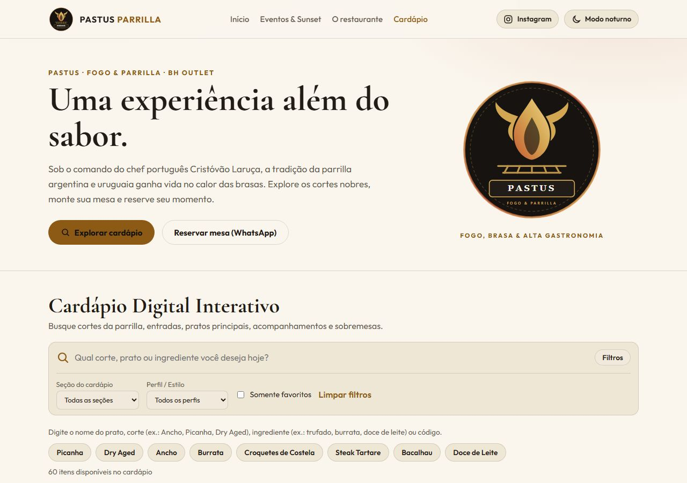

O essencial
Vitrine básica
Um modelo para apresentar o seu negócio em um endereço compartilhado.
- Template padrão
- Conteúdo do seu negócio
- Contato pelo WhatsApp


Um site com a sua cara. Comece com um modelo e personalize quando precisar.
Em preparação

Sites reais. Histórias e jeitos de fazer diferentes.
Uma base pensada para o seu negócio.
Suas informações, seu jeito de apresentar.
Um endereço para aproximar seus clientes.
Esse é o caminho que estamos preparando. A criação de vitrines ainda não está aberta.
Do primeiro cardápio a uma ideia só sua. O modelo é um ponto de partida, não o limite do projeto.
Sabores, cardápios e encontros. Sites para dar espaço ao seu negócio de alimentação.
Projetos e processos criativos com uma apresentação que acompanha sua identidade.
Imagem, comunicação e produção de conteúdo em um portfólio próprio.
Informações sobre o atendimento e caminhos simples para o primeiro contato.
Um espaço para apresentar soluções, produtos e projetos digitais.
Ainda não há exemplo publicado nesta área. Converse sobre seu projeto.
Exemplos reais organizados por área de atuação. Estes trabalhos mostram possibilidades; não são modelos prontos para contratação.
Trabalhos reais, possibilidades para a sua próxima ideia.
Uma proposta que separa o essencial, o seu endereço e aquilo que precisa de um olhar exclusivo.
Vitrine básica
Um modelo para apresentar o seu negócio em um endereço compartilhado.
Mais identidade
Um subdomínio Inspira ou a conexão de um domínio que já é seu.
Projeto sob medida
Uma nova apresentação, integração ou funcionalidade para a sua ideia.
A oferta está em preparação. Registro e renovação de domínio são serviços separados; não estão incluídos na assinatura de vínculo.
O básico sobre a sua futura vitrine.
Ainda não. Estamos preparando a primeira versão. Esta página apresenta a proposta e as possibilidades da Vitrine Inspira.
Não. A proposta básica prevê um endereço compartilhado. Quem quiser um endereço personalizado poderá solicitar a avaliação de um subdomínio ou domínio próprio.
Além das informações do modelo, podemos conversar sobre uma apresentação diferente, novas seções e funcionalidades. Mudanças específicas precisam de orçamento e escopo combinados.
O primeiro recorte usa um link para abrir uma conversa no WhatsApp. A mensagem depende da ação de quem visita; não há checkout nem confirmação automática de pedido.
A Vitrine Inspira é um projeto do Coletivo Inspira. Conheça o coletivo (abre em nova aba)↗.
Um novo visual, uma funcionalidade, um endereço próprio. O primeiro passo é entender o que faz sentido para o seu negócio.
O canal de orçamento será disponibilizado aqui.